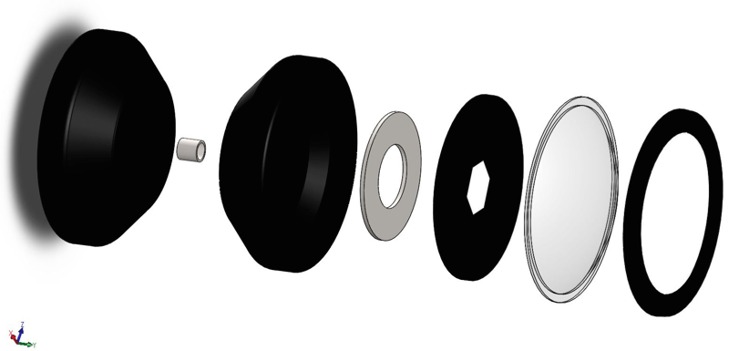
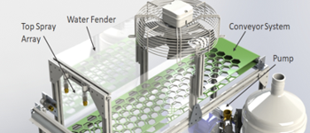
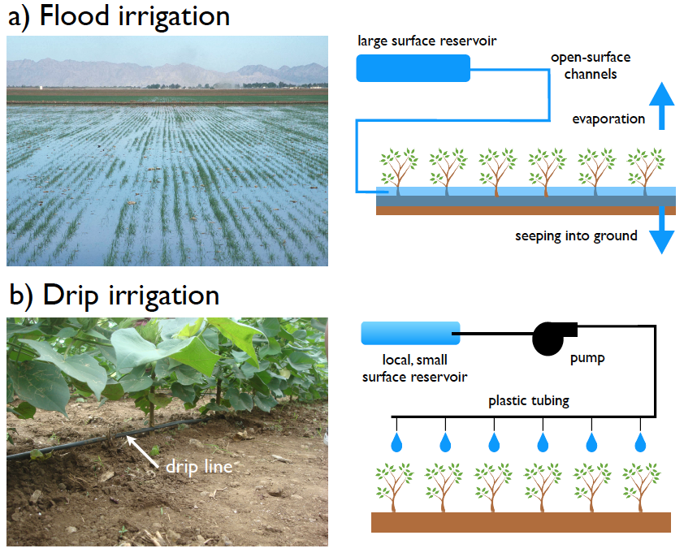
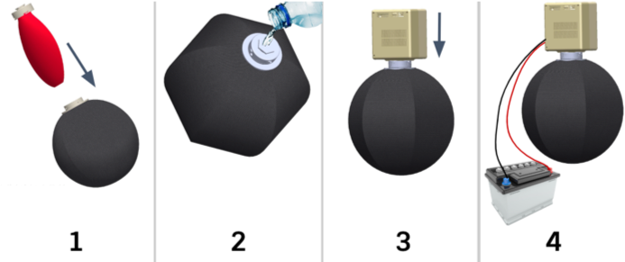
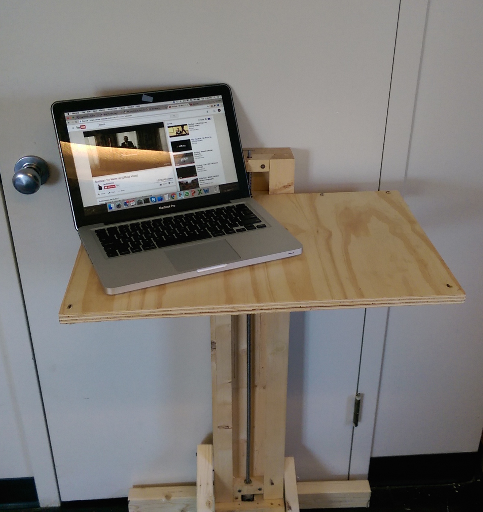
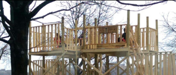

Projects
Flash! Yoyo
My team took inspiration from mechanical aperatures, and designed a yoyo mimicking a camera. I was specifically in charge of the lens and lens cap design, designing molds in Solidworks and generated the g-code in MasterCAM. I was also incharge of the manufacturing run for these parts, using optimized injection molding and thermoforming to create the parts. This was the final project for Design and Manufacturing II, a class focused on teaching design for manufacturing and provide hands-on experience on various methods of manufacturing. Our yoyo was also the fastest spinning in the history of the class.
Recycling Contamination Removal
We developed a prototype system for cleaning plastic food containers for food courts and cafeteria, making them more recyclable. This was the final product for Product Design and Development, co-taught by MIT Sloan Business school, and Rhode Island School of Design. I played a major role in design and creating our prototypes, as well as the final validation and testing.
Low-cost low pressure-drop irrigation filtration
We designed and tested a horizontal settling chamber for drip irrigation in developing countries. Drip irrigation systems use pumps to pump water from a local water source through a pressurized network of plastic tubing installed along rows of crops. Our filter showed great capacity for eliminating impurities, without a significant increase in the pressure losses of an overall system.
Emergency Power Pack
The emergency power pack was a prodct envisioned to supply power to military personnel. I worked to improve the limitations of the previous design, and create a product fora much wider customer base. I was part of a two person subteam that designed and tested a new approach for regularizing the rate of reaction. Our new design allowed us to make several more sweeping design decisions, that changed the system design, allowing us to target a non-military customer base.
Transformable Desk
Precision design of a desk, meeting stiffness and translation range requirements.
Next Big Tipper
In my freshman year at MIT, a new student group was formed in my dorm. They built a rope swing in the courtyard. The group was named Next Big Thing and subsequent projects were much larger. I joined the group and worked on subsequent projects: a slide (slipper), a zip-line (zipper) and a larger swing (flipper). In the final semester of my junior year, I had the honor to design and lead the construction of a 16 ft. see-saw (tipper).
Sonic Screwdriver
A portable multi-tool that combinining multiple inputs and effectors.